Définition : \(m\) désigne un nombre. La fonction linéaire de coefficient \(m\) est la fonction qui, à tout nombre \(x\), associe le nombre \(mx\), c'est-à-dire le produit de \(m\) par \(x\).
Si on désigne par \(f\) cette fonction, on peut noter \(f : x \mapsto mx\) ou \(f(x) = mx\).
💡 Remarque : Une fonction linéaire est un cas particulier de fonction affine (cas où \(p = 0\)).
📌 Exemple : La fonction linéaire de coefficient 5 est la fonction \(f : x \mapsto 5x\).
L'image d'un nombre \(x\) par cette fonction est \(5x\), c'est-à-dire \(f(x)=5x\).
Propriété : La représentation graphique d'une fonction linéaire de coefficient \(m\) est une droite \(d\) passant par l'origine du repère. Le nombre \(m\) est le coefficient directeur ou la pente de la droite \(d\).
Soit \(M\) un point de la droite \(d\). Si, en restant sur la droite \(d\), on augmente l'abscisse de 1, alors l'ordonnée augmente de \(m\) (on obtient alors le point \(M'\)).
Comme la représentation graphique d'une fonction linéaire est une droite qui passe par l'origine du repère, il suffit de déterminer un autre point pour pouvoir la tracer. On choisit pour cela une valeur de \(x\) (différente de 0) et on calcule son image.
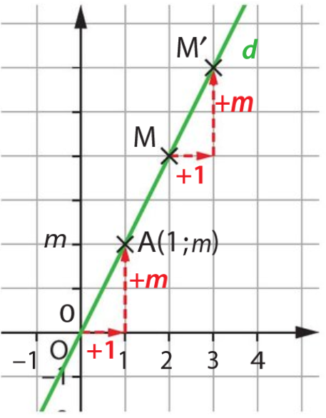
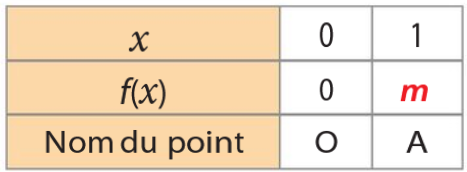
Exemple :
Montrer que les fonctions définies ci-dessous sont des fonctions linéaires et préciser leur coefficient.
a. \(f(x) = -3x\)
b. \(g(x) = 2(x + 1) - 2\)
Solution :
a. \(f(x)=mx\) avec \(m=-3\). Donc \(f\) est une fonction linéaire de coefficient \(-3\).
b. On développe : \(g(x)=2x+2-2=2x\). Donc \(g(x)=mx\) avec \(m=2\).
Donc, \(g\) est une fonction linéaire de coefficient \(2\).
2. Modéliser une situation de proportionnalité par une fonction linéaire
Une situation de proportionnalité de coefficient de proportionnalité \(m\) peut être traduite par une fonction linéaire de coefficient \(m\).
Une voiture roule à une vitesse constante de 90 km/h. Si \(d(t)\) représente la distance parcourue (en km) pendant le temps \(t\) (en heures), on a alors le tableau de proportionnalité suivant.
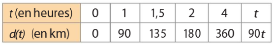
La distance \(d(t)\) est donc proportionnelle au temps \(t\). On a \(d(t) = 90t\).
La fonction \(d\) est la fonction linéaire de coefficient 90.
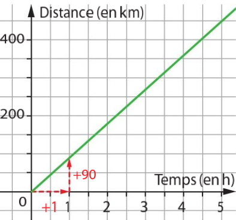
Exemple 1 : Martin vend des cerises à 6,75 € le kilogramme.
La fonction \(f\) qui, à la masse de cerises en kilogrammes, associe son prix est-elle linéaire ?
Si oui, préciser son coefficient.
Solution : Si \(x\) est la masse en kilogrammes, le prix est \(f(x)=6,75x\). Donc \(f\) est une fonction linéaire de coefficient 6,75.
Exemple 2 : Une municipalité augmente ses impôts de 5 % entre 2019 et 2020. \(g\) est la fonction qui, au montant \(x\) de l'ancien impôt de 2019, associe le montant du nouvel impôt de 2020. Exprimer \(g(x)\) en fonction de \(x\). La fonction \(g\) est-elle linéaire ?
Solution : \(g(x) = (1 + \frac{5}{100})x = 1,05x\). Donc \(g\) est une fonction linéaire de coefficient 1,05.
3. Reconnaître et utiliser une fonction affine
\(m\) et \(p\) désignent deux nombres. Une fonction affine est une fonction qui, à tout nombre \(x\), associe le nombre \(mx + p\). Si on désigne par \(f\) cette fonction, on peut noter \(f : x \mapsto mx + p\) ou \(f(x) = mx + p\).
- La fonction \(f : x \mapsto 2x + 1\) est une fonction affine car \(f(x)=mx+p\) avec \(m=2\) et \(p=1\).
- La fonction \(f : x \mapsto 0,5x - 3\) est une fonction affine avec \(m=0,5\) et \(p=-3\).
\(f\) désigne une fonction.
- Si \(f\) est une fonction affine, alors sa représentation graphique est une droite.
- Si la représentation graphique de \(f\) est une droite, alors \(f\) est une fonction affine.
Exemple:
Soit la fonction \(f: x \mapsto -0,5x + 1\).
\(f\) est affine car \(f(x)=mx+p\) avec \(m=-0,5\) et \(p=1\).
Sa représentation graphique est une droite. Pour la tracer, il suffit de trouver deux points.
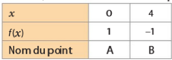
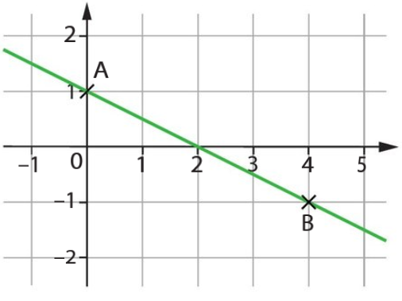
Exemples : 1. Montrer que les fonctions définies ci-dessous sont des fonctions affines.
\[
a.\ f(x) = -3x + 6 \qquad b.\ g(x) = \dfrac{2x + 5}{3} \qquad c.\ h(x) = 4
\]
Solution :
a. \(f(x) = -3x+6 = mx+p\) avec \(m=-3\) et \(p=6\). Donc \(f\) est affine.
b. \(g(x) = \dfrac{2x+5}{3} = \dfrac{2}{3}x + \dfrac{5}{3}\) avec \(m=\frac{2}{3}, p=\frac{5}{3}\). Donc \(g\) est affine.
c. \(h(x)=0x+4\) avec \(m=0,p=4\). \(h\) est constante donc affine.
2. Représenter graphiquement la fonction \(k: x \mapsto -3x + 2\) dans un repère. Solution : \(k\) est affine (\(m=-3, p=2\)).
Sa représentation est une droite.
Pour tracer une droite, il suffit de trouver deux points.
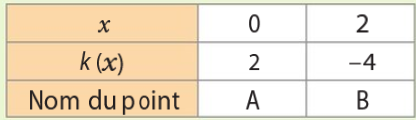
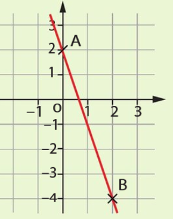
4. Interpréter les paramètres d'une fonction affine
\(m\) et \(p\) désignent deux nombres, \(f\) désigne la fonction affine \(f: x \mapsto mx + p\) et \(d\) est sa représentation graphique.
- Le nombre \(m\) est appelé coefficient directeur ou pente de la droite \(d\). En restant sur la droite \(d\), si on augmente l'abscisse de 1, alors l'ordonnée augmente de \(m\).
- Le nombre \(p\) est appelé ordonnée à l'origine de la droite \(d\). C'est l'ordonnée du point d'intersection de la droite \(d\) avec l'axe des ordonnées.
La fonction \(f: x \mapsto 2x - 1\) est représentée ci-contre.
\(f\) est affine avec \(m=2\) et \(p=-1\).
- \(p=-1\) donc la droite \(d\) coupe l'axe des ordonnées au point d'ordonnée \(-1\) : c'est le point \(A(0;-1)\).
- \(m=2\) donc le point \(B(1;1)\) appartient aussi à la droite, de même que \(C(2;3)\), etc.
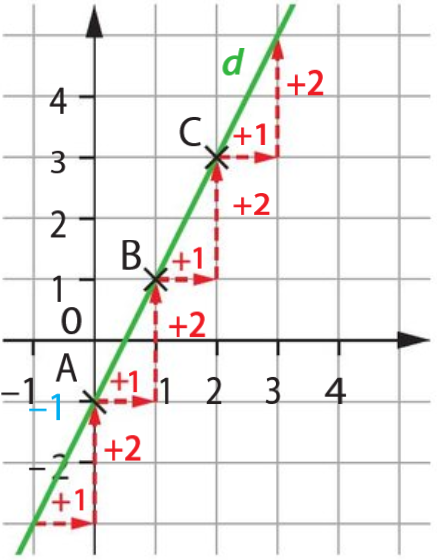
Le coefficient directeur \(m\) détermine la direction de la droite \(d\). S'il est positif, la droite « monte » quand on la regarde de gauche à droite, avec une pente d'autant plus forte que \(m\) est grand. Si \(m\) est négatif, la droite « descend ».
Exemple 1 : Une fonction \(h\) est représentée ci-contre. Par lecture graphique, déterminer une expression de \(h(x)\).
Solution : C'est une droite donc \(h\) est affine : \(h(x)=mx+p\).
On lit l'ordonnée à l'origine : \(p=3\).
Lorsqu'on avance de 1 en abscisse, on descend de 2 en ordonnée, donc \(m = -2\).
D'où \(h(x) = -2x + 3\).
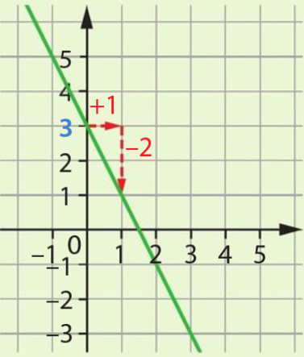
Exemple 2 : Une fonction \(f\) est représentée ci-contre. Par lecture graphique, déterminer une expression de \(f(x)\).
Solution : La droite coupe l'axe des ordonnées en \(1\) → \(p=1\).
Pour le coefficient directeur : on part du point \((0;1)\) ; si l'on avance de 1 unité en abscisse, on descend de 3 unités en ordonnée → \(m = -3\).
Donc \(f(x) = -3x + 1\).
Une association sportive propose deux tarifs annuels pour l'accès aux courts de tennis :
Tarif 1 : Une participation de 5 € par séance de jeu.
Tarif 2 : Un forfait annuel de 60 € auquel s'ajoute une participation de 2 € par séance.
1) Soit \(x\) le nombre de séances effectuées. On note \(P_1\) le prix payé avec le Tarif 1 et \(P_2\) le prix payé avec le Tarif 2. Exprimer \(P_1(x)\) et \(P_2(x)\) en fonction de \(x\).
2) Préciser, en justifiant, la nature de chacune des deux fonctions \(P_1\) et \(P_2\).
3) Démontrer, par la résolution d'une équation, que pour 20 séances, le prix payé est identique pour les deux tarifs.
4) Un adhérent dispose d'un budget annuel de 150 €. Déterminer le nombre maximum de séances qu'il peut effectuer avec le Tarif 2.
📌 EXERCICE 2 (20 points)
Brevet
Dans un repère orthonormé, on considère la fonction affine \(f\) dont la représentation graphique est la droite \((d)\) passant par les points \(A(0~;~3)\) et \(B(2~;~7)\).
1) En vous aidant des coordonnées du point \(A\), justifier que l'ordonnée à l'origine de la fonction \(f\) est égale à 3.
2) Démontrer par le calcul que le coefficient directeur de la droite \((d)\) est 2.
3) En déduire l'expression algébrique de \(f(x)\) en fonction de \(x\).
4) Calculer l'antécédent de 10 par la fonction \(f\). Présenter le résultat sous forme d'une fraction irréductible.
📌 EXERCICE 3 (15 points)
Brevet
On considère la fonction \(g\) définie par \(g(x) = 3x + 5\).
1) Vérifier par le calcul que l'image de \(-2\) par la fonction \(g\) est égale à \(-1\).
2) Déterminer, par la résolution d'une équation, le nombre dont l'image par \(g\) est nulle.
3) Un élève affirme : « L'antécédent de 11 par la fonction \(g\) est un nombre entier ». A-t-il raison ? Justifier la réponse.
📌 EXERCICE 4 (20 points)
Brevet
On considère une fonction linéaire \(h\) telle que \(h(3) = 6\) et une fonction affine \(k\) définie par \(k(x) = -0,5x + 2\).
1) Justifier que l'expression de la fonction \(h\) est \(h(x) = 2x\).
2) Les droites représentatives des fonctions \(h\) et \(k\) sont sécantes en un point \(I\). Démontrer que l'abscisse du point \(I\) est solution de l'équation : \(2x = -0,5x + 2\).
3) Déduire de la question précédente les coordonnées exactes du point \(I\).
📌 EXERCICE 5 (15 points)
Concret
Un magasin propose deux formules pour la location de vélos :
Formule A : 8 € par heure.
Formule B : un abonnement annuel de 20 € puis 3 € par heure.
1) Exprimer le prix \(A(x)\) pour la formule A et \(B(x)\) pour la formule B en fonction du nombre d'heures \(x\).
2) Quelle est la nature de chaque fonction ? Justifier.
3) À partir de combien d'heures la formule B devient-elle plus avantageuse que la formule A ? (Résoudre une inéquation ou une équation)
📌 EXERCICE 6 (15 points)
Concret
Un cinéma pratique deux tarifs :
Tarif plein : 9,50 € la séance.
Tarif abonné : carte d'abonnement annuelle à 40 €, puis 5 € par séance.
1) On note \(x\) le nombre de séances. Donner les expressions des prix \(F(x)\) (tarif plein) et \(A(x)\) (tarif abonné).
2) Pour 12 séances, quel est le tarif le plus économique ?
3) Déterminer le nombre de séances à partir duquel l'abonnement devient rentable (c'est-à-dire \(A(x) \le F(x)\)).
Pour s'inscrire à un tournoi, trois tarifs sont proposés aux clubs participants.
Tarif A : 25 € par personne.
Tarif B : Un forfait de 160 € et 15 € par personne.
Tarif C : Un forfait de 520 € quel que soit le nombre de personnes inscrites.
On note f, g et h les fonctions qui modélisent les prix, en euro, respectivement du tarif A, du tarif B et du tarif C.
Donner l'expression de f(x), g(x) et h(x) en fonction du nombre x de personnes inscrites.
Représenter les fonctions f, g et h dans un même repère.
Graphiquement, quel est le tarif le plus avantageux pour un club souhaitant inscrire 10 personnes ? 20 personnes ?
Quel est le nombre d'inscriptions pour lequel les tarifs A et B sont les mêmes ? Justifier par un calcul.
Un club dispose de 325 €. Combien de personnes peut-il inscrire au maximum ? Quel tarif choisir ? Justifier par un calcul.
À partir de combien d'inscriptions le tarif C est-il le moins cher ? Justifier par un calcul.
🌍 Exercice 2 : Concentration de CO₂
Brevet
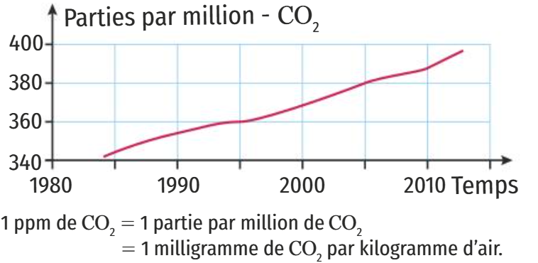
Évolution de la concentration en CO₂ (ppm)
On veut modéliser l'évolution de la concentration de CO₂ à l'aide d'une fonction g où g(x) est la concentration de CO₂ en ppm en fonction de l'année x.
Expliquer pourquoi une fonction affine semble appropriée pour modéliser la concentration en CO₂ en fonction du temps entre 1995 et 2005.
Tom propose l'expression g(x) = 2x - 3630. Léo propose l'expression g(x) = 2x - 2000. Quelle expression modélise le mieux l'évolution de la concentration de CO₂ ? Justifier.
450 ppm de CO₂ correspond au seuil critique au-dessus duquel les conséquences climatiques deviennent hors de contrôle. En quelle année ce seuil sera-t-il atteint d'après le modèle choisi à la question précédente ?
(D'après brevet, Métropole, septembre 2019)
🎨 Exercice 3 : Tarifs des peintres
Brevet
Peintre A : 15 € par m².
Peintre B : 10 € par m² et 100 € d'installation de chantier.
Peintre C : 700 € quelle que soit l'aire inférieure à 100 m².
1. Montrer que pour 40 m², le tarif du peintre A est de 600 €, le tarif du peintre B est de 500 € et le tarif du peintre C est de 700 €.
2. Écrire le prix b(x) proposé par le peintre B.
3. On donne a(x) = 15x et c(x) = 700.
Quelle est la nature de la fonction a ?
Calculer l'image de 60 par la fonction a.
Calculer l'antécédent de 300 par la fonction a.
4. a. Résoudre l'équation 15x = 10x + 100.
(D'après brevet, Nouvelle-Calédonie, décembre 2019)
💻 Exercice 4 : Fonction affine et Scratch
Brevet
1. On a utilisé une feuille de calcul pour obtenir les images de différentes valeurs de x par une fonction affine f. Voici une copie de l'écran obtenu.
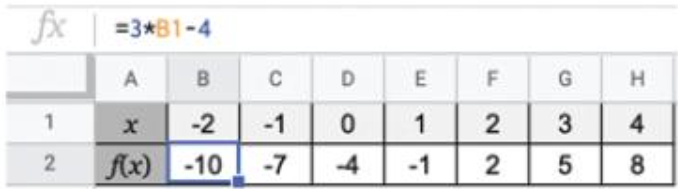
Extrait tableur – fonction affine
Quelle est l'image de -1 par la fonction f ?
Quel est l'antécédent de 5 par la fonction f ?
Donner l'expression de f(x).
Calculer f(10).
2. On considère un programme de calcul. On donne l'algorithme et la version sous Scratch.
Algorithme :
Choisir un nombre
Ajouter 3
Multiplier par 2
Soustraire 5
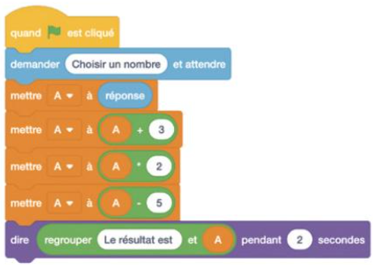
Programme Scratch
Si on choisit le nombre 8 au départ, quel sera le résultat ?
On note g la fonction qui au nombre x choisi au départ, associe le résultat obtenu avec ce programme de calcul. Montrer que g(x) = 2x + 1.
Quel nombre doit-on choisir au départ pour obtenir 6 ?
3. Quel nombre faudrait-il choisir pour que la fonction f et la fonction g donnent le même résultat ?
(D'après brevet, Polynésie, juillet 2019)
📰 Exercice 5 : Formules d'achat de magazines
Brevet
Une personne s'intéresse à un magazine sportif qui paraît une fois par semaine. Elle étudie plusieurs formules d'achat du magazine qui sont détaillées ci-après.
Formule A - Prix du magazine à l'unité : 3,75 €
Formule B - Abonnement pour l'année : 130 €
Formule C - Forfait de 30 € pour l'année et 2,25 € par magazine.
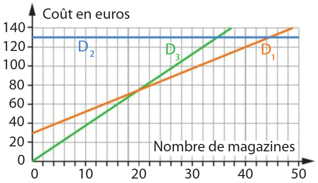
Représentations graphiques (€ en fonction du nombre de magazines)
1. Relier chaque formule d'achat à sa représentation graphique.
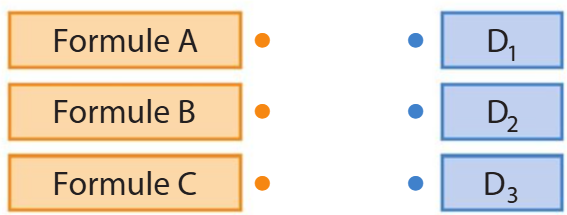
2. En utilisant le graphique, répondre aux questions suivantes.
En choisissant la formule A, quelle somme dépense-t-on pour acheter 16 magazines dans l'année ?
Avec 120 €, combien peut-on acheter de magazines au maximum dans une année avec la formule C ?
Si on décide de ne pas dépasser un budget de 100 € pour l'année, quelle est alors la formule qui permet d'acheter le plus grand nombre de magazines ?
(D'après DNB, Polynésie, septembre 2018)
🚆 Exercice 6 : Trajets en train
Brevet
Dans le cadre de son travail, Elsa doit se déplacer régulièrement à Paris. Elle voyage en train. Le billet coûte 80 €. Elsa peut acheter une carte à l'année qui coûte 49 € et qui lui permet d'obtenir toute l'année une réduction de 30% sur les billets.
1- Étude des tarifs :
Calculer le prix qu'Elsa paiera pour 3 billets sans carte de réduction.
Justifier que le prix d'un billet de train après une remise de 30% est 56 €.
Calculer le prix total payé par Elsa pour trois billets avec la carte, achat de la carte compris.
2- Comparaison des tarifs : Elsa achète x billets. On nomme : f la fonction qui associe à x le montant total que paie Elsa sans la carte. g la fonction qui associe à x le montant total que paie Elsa avec la carte.
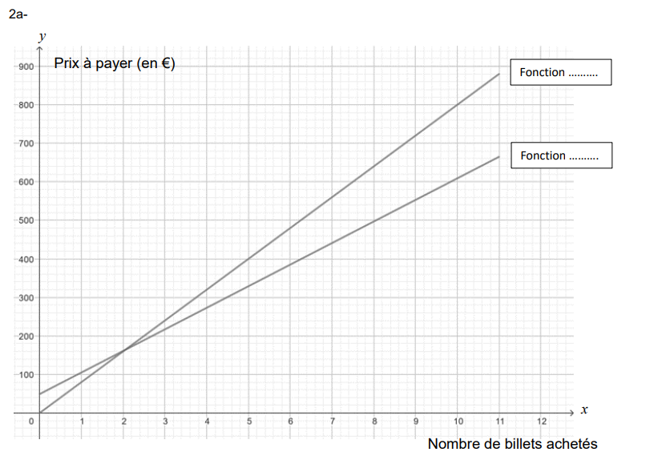
2.b- Choisir l'expression algébrique de la fonction g : Choix 1 : g(x) = 56x + 49 | Choix 2 : g(x) = 56x | Choix 3 : g(x) = 80x | Choix 4 : g(x) = 49x + 56
2.c- Calculer g(8).
2.e- Sachant qu'Elsa achètera plus de 8 billets, déterminer le tarif le plus avantageux.
(D'après DNB, France, Juin 2025)
🚗 Exercice 7 : Achat ou Location de voiture
Brevet
Un garage propose 2 options au client :
Option Achat : prix d'achat de la voiture 22 400 €. Assurance obligatoire 75 € par mois.
Option Location : 425 € par mois, assurance comprise.
Partie A
Montrer qu'avec l'option Achat la dépense à la fin de la première année est de 23 300 €.
Après 36 mois, calculer l'économie réalisée par le client s'il choisit l'option Location.
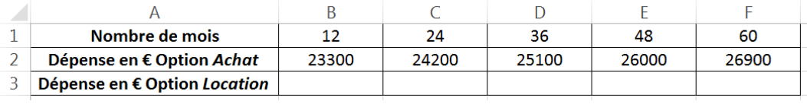
Partie B
On souhaite maintenant modéliser les deux options précédentes par des fonctions. On note x la durée écoulée en mois depuis la livraison de la voiture. La fonction g, permettant de calculer la dépense correspondant à l'option Location, peut s'écrire sous la forme : g(x) = 425x.
Déterminer l'expression de f(x) permettant de calculer la dépense correspondant à l'option Achat.
Sur le graphique de la page 8, on a tracé les courbes représentatives Cf et Cg des fonctions f et g. Par lecture graphique, déterminer à partir de combien de mois, l'option Achat est la plus avantageuse.
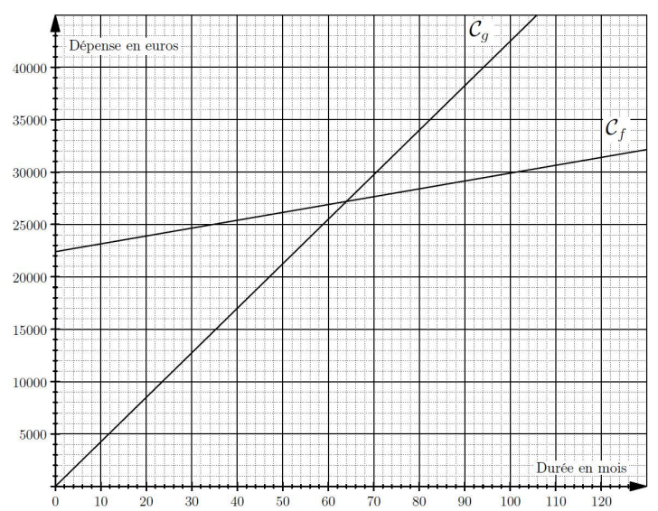
Cf et Cg – dépenses cumulées selon les mois
(D'après DNB, France, Juin 2025)
✔ Chaque question est suivie d’un champ de vérification — énoncés 100% conformes aux originaux.